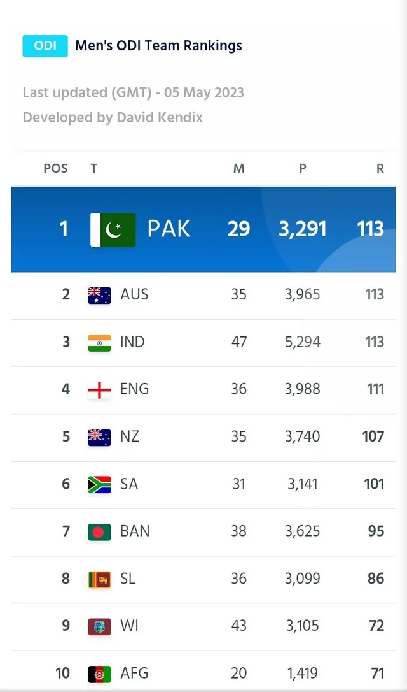

PCT History
Recent Results
Final Match (D/N), Karachi, February 14, 2025
PAK
242
NZ
(45.2/50 ov) 243/5
3rd Match (D/N), Karachi, February 12, 2025
PAK
(49/50 ov) 355/4
SA
352/5
1st Match (D/N), Lahore, February 08, 2025
PAK
(47.5/50 ov) 252
NZ
330/6
3rd ODI (D/N), Johannesburg, Dec 22, 2024
PAK
308/9
SA
(42/47 ov) 271
2rd ODI (D/N), Cape Town, Dec 19, 2024
PAK
329
SA
(43.1/50 ov) 248
1st ODI (D/N), Paarl, December 17, 2024
PAK
242/7
SA
239/9
2nd T20I (N), Centurion, December 13, 2024
PAK
206/5
SA
(19.3 ov) 210/3
1st T20I (N), Durban, December 10, 2024
PAK
(20 ov) 172/9
SA
183
PCT Motivating Edit
Our Review
Once Upon a Time... :(
